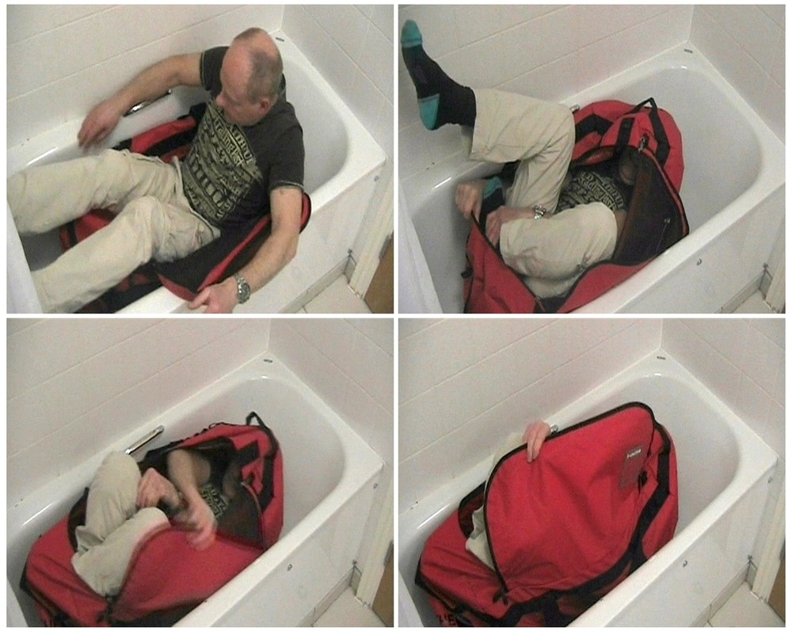
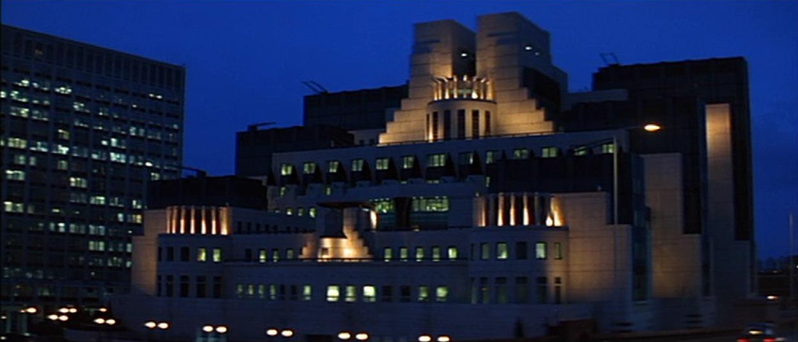

The Spy in the Bag
Pimlico, London — August 2010

The Event
Gareth Williams, a brilliant GCHQ codebreaker on secondment to MI6, was found dead inside a North Face sports bag, which was padlocked from the outside and placed in his bathtub. Despite the bag being locked, no fingerprints were found on the lock, the bag, or the bathtub.

Current Theories
The Archive analyzes the intersection of espionage and forensic anomalies.
- State-Sponsored Assassination The lack of DNA and the professional 'cleaning' of the scene suggest a high-level covert operation by a foreign or domestic agency.
- Accidental Death / Misadventure Police initially theorized Williams entered the bag himself for personal reasons and became trapped, though a coroner later ruled this was unlikely.